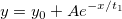

データセットの比較 (OriginProのみ)
PostFit-CompareDataset-Dialog
このツールは同じフィット関数を使ってフィットした2つのデータセットのフィット結果を比較するために使用します。F検定を使って、2つのデータセットがそれぞれ有意に異なるかどうかを判定します。
このツールを使うには
- 異なる2つのデータセットに同じフィット関数を使ってフィットを実行そ、2つのフィットレポートを出力します。
- Originのメニューから、解析：フィット：データセット比較を選択します。
ダイアログの設定項目は以下で説明します。
| Note: 複数データセットを同時にフィットする場合、各データセットのフィット結果レポートは異なるワークシートに出力させてください。そうしないとOriginはフィット結果を認識できません。
そのため、フィットを実行する前に、複数データフィットモードを独立フィット(個別レポート)としてセットしてください。非線形曲線フィットの場合、NLFitダイアログの設定タブの左パネルにあるデータ選択の項目を選択すると、この設定項目があります。
|

|
サンプル
では、2つのデータセットがあり、それはフィットモデルについて異なるかどうか確認したいと思います。
- 
操作
- \Samples\Curve Fitting フォルダ内にある、 Exponential Decay.dat をインポートします。
- 列Bを選択し、解析：フィット：非線形曲線フィットを選択してダイアログを開きます。関数をExpDec1にセットします。OK をクリックすると結果シートができます。
- 列Cを選択して解析：フィット：非線形曲線フィット：１<前回どおり>と操作し、同じモデルで列Cをフィットします。
- メニューから、解析：フィット：データセット比較を選択してダイアログを開きます。
- 参照ボタンをクリックしてレポートツリーブラウザを開き、フィット結果1のために項目を一つ選びます。
- 同じ操作をしてフィット結果2にもう一つの項目を入力します。
- フィットパラメータとフィット統計を選択してOKをクリックします。
- F検定の表では、expDec1モデルにフィットした場合、列Bと列Cは異なると大まかに結論付ける事ができます。
|
ダイアログのオプション
再計算
入力データに何らかの変更がある場合、結果の再計算と更新方法を指定します。
参考：
- 分析結果の再計算
フィット結果1
1つ目のフィット結果を指定します。フィット結果1の右側にあるレポートツリーブラウザボタン をクリックすると、全てのフィット結果がレポートツリーブラウザダイアログに表示されます。フィット結果1として必要なレポート結果をレポートツリーブラウザダイアログから指定します。
をクリックすると、全てのフィット結果がレポートツリーブラウザダイアログに表示されます。フィット結果1として必要なレポート結果をレポートツリーブラウザダイアログから指定します。
OriginはODRアルゴリズムを使用したフィット結果の比較はサポートしていません。例えば、同じ陰関数によるフィット結果はフィット結果1のレポートツリーブラウザダイアログには表示されません。
フィット結果2
2つ目のフィット結果を指定します。フィット結果2のボックス右隣りにあるレポートツリーブラウザボタン をクリックすると、フィット結果1と同じフィット関数が使用された結果のみがレポートツリーブラウザダイアログに表示されます。フィット結果2として必要なレポート結果をレポートツリーブラウザダイアログから指定します。
有意水準
デフォルトは0.05です。0 から 1 の値を指定可能です。
その他の出力
フィット表を出力するかどうかを指定します。
| フィットパラメータ
|
各データセットに対してフィットパラメータを出力するか指定します。
|
| フィット統計
|
各データセットに対してフィット統計を出力するか指定します。
|
| 第1データセット名
|
最初に結果シートに表示されるFit Result1にあたるデータセット名を指定します。デフォルト名はData 1です。
|
| 第2データセット名
|
2番目に結果シートに表示されるFit Result2にあたるデータセット名を指定します。デフォルト名はData 2です。
|
結果
比較結果の出力レポートワークシートを指定します。
出力結果を参照してください。